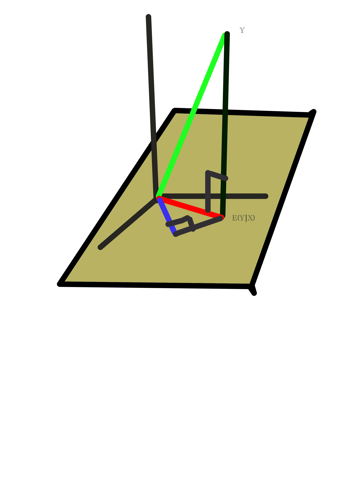
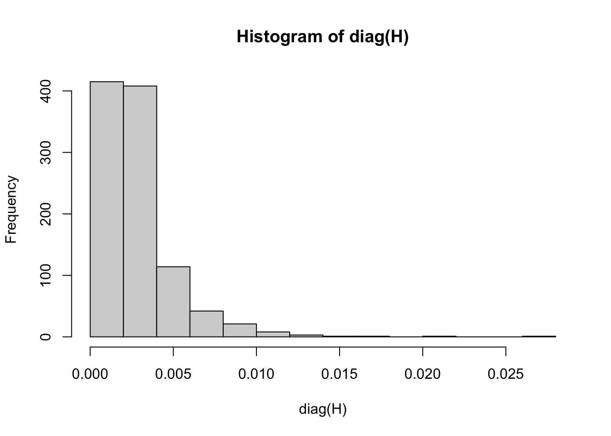

f <- function(t) t^2
g <- function(t) sin(t)
fg <- function(t) f(t) * g(t)
integrate(fg,0,1)0.2232443 with absolute error < 2.5e-15The usefulness of vector spaces is greatly enhanced with the addition of an inner product structures. We motivate and define such structures here, and present applications.
Among other things, we will analyze a method for removing racial, gender etc. bias in machine learning algorithms.
You may recall from your high school geometry course the key concept of perpendicularity, represented by the ⊥ symbol. You may also recall that in 2-dimensional space, given a point P and a line L, the line drawn from point P to the closest point P’ within L is perpendicular to L. The same is true if L is a plane. The point P’ is called the projection of P onto L.
This was shown in this book’s cover, shown here:

The point at the end of the green vector is projected onto the mustard-colored plane, producing the red vector. It in turn is projected onto the blue line. There are right angles in each case.
The early developers of linear algebra wanted to extend such concepts to abstract vector spaces. This aids intuition, and has very powerful applications.
You may have seen dot products in a course on vector calculus or physics. For instance, the dot product of the vectors (3,1,1.5)’ and (0,5,6)’ is
3x0 + 1x5 + 1.5x6 = 14
This in fact is a standard inner product on \(\cal R^3\), but the general definition is as follows.
An inner product on a vector space \(\cal V\), denoted by the “angle brackets” notation \(<u,v>\), is a function with two vectors as arguments and a numerical output, with the following properties:
\(<u,v> = <v,u>\)
The function is bilinear:
\[ <u,av+bw> = a <u,v> + b <u,w> \]
\(<u,u> \geq 0\), with equality if and only if \(u = 0\).
\(\cal R^n\):
As noted, ordinary dot product is the most common inner product on this space.
\(<(a_1,...,a_n),(b_1,...,b_n> = a_1 b_1 + ... + a_n b_n\)
C(0,1):
One inner product on this space is
\[ <f,g> = \int_{0}^{1} f(t) g(t) ~ dt \]
For instance, with \(f(t) = t^2\) and \(g(t) = \sin(t)\), the inner product can be computed with R:
f <- function(t) t^2
g <- function(t) sin(t)
fg <- function(t) f(t) * g(t)
integrate(fg,0,1)0.2232443 with absolute error < 2.5e-15This clearly fits most requirements for inner products, but what about \(<f,f> = 0\) only if \(f = 0\)? A non-0 \(f\) will have \(f^2(t) > 0\) for at least one \(t\), and by continuity, \(f^2(t) > 0\) on an interval containing that \(t\), thus making a nonzero contribution to the integral and thus to the inner product.
\(\cal RV(\Omega)\):
We will take covariance as our inner project:
\[ <U,V> = cov(U,V) = E[(U - EU) (V - EV)] \]
The properties of expected value, e.g. linearity, show that the requirements for an inner product hold.
This concept extends the notion of a the length of a vector, as we know it in \(\cal R^2\) and \(\cal R^3\).
Definition:
The norm of a vector \(x\), denoted \(||x||\), is
\[ (<x,x>)^{0.5} \]
The distance from a vector \(x\) to a vector \(y\) is
\[ ||y - x|| \]
Theorem 8.1 (Cauchy-Schwarz Inequality) Say \(u\) and \(v\) are vectors in an inner product space. Then
\[ |<u,v>| \leq ||u|| ~ ||v|| \]
Proof. See the Your Turn problem below.
Correlation coefficients are ubiquitous in data science. It is well known that their values fall into the interval [-1,1]. Let’s prove that.
Recall from Chapter 4 the notion of the covariance between two random variables (from which the covariance matrix of a random vector is formed). We remarked that covariance is intuitively like correlation,but that latter is a scaled form. Formally,
\[ \rho(X,Y) = \frac{E[(X-EX)(Y-EY)]}{\sqrt{Var(X)} \sqrt{Var(Y)}} \]
By dividing the covariance by the product of the standard deviations, we obtain a unitless quantity, i.e. free of units such as centimeters and degrees.
Now, \(X\) and \(Y\) are in \(\cal RV(\Omega)\). To simplify the algebra, consider the case \(EX = EY = 0\).
Recalling our inner product for this space, we have
\[ <X,Y> = E(XY) \]
and
\[ ||X||^2 = <X,X> = E(X^2) = Var(X) \]
with the analogous relations for \(Y\).
Cauchy=Schwarz then says
\[ |E(XY)| \leq \sqrt{Var(X)} \sqrt{Var(Y)} \]
which says the correlation is between -1 and 1 inclusive.
In the world of ordinary physical geometry, we know the following
The distance from A to B is less than or equal to the sum of the distances from A to C and C to B. This is true as well in general, abstract inner product spaces.
Theorem 8.2 (Triangle Inequality) In a general inner product space,
\[ ||x - z|| \leq ||x - y|| + ||y - z|| \]
Proof. See the Your Turn problem below.
As mentioned, the extension of classical geometry to abstract vector spaces has powerful applications. There is no better example of this than the idea of projections.
We say that vectors \(u\) and \(v\) are orthogonal if \(<u,v> = 0\). This is the general extension of the notion of perpendicularity in high school geometry. Then we have the following:
Theorem 8.3 (Projection Theorem) Consider an inner product space \(\cal V\), with subspace \(\cal W\). Then for any vector \(x\) in \(\cal V\), there is a unique vector \(z\) in \(\cal W\), such that \(z\) is the closest vector to \(x\) in \(\cal W\).
Furthermore, \(x-z\) is orthogonal to any vector \(r\) in \(\cal W\).
The full proof is beyond the scope of this book, as it requires background in real analysis. Indeed, even the statement of the theorem is not mathematically tight.
For example, in the case of \(R^n\), It will be seen shortly that for each \(\cal W\) in the theorem, there is a matrix \(P_{W}\) that implements the projection, i.e.
\[ z = P_W x \]
Note that projection operators are idempotent, meaning that if you apply a projection twice, the effect is the same as applying it once. In the matrix equation above, this means \(P_W^2 = P_W\). This makes sense; once you drop down to the subspace, there is no further dropping down to that same space.
That this ancient theorem in geometry still holds in general inner product spaces is a tribute to the power of abstraction.
Theorem 8.4 If vectors \(X\) and \(Y\) are orthogonal, then
\[ ||X+Y||^2 = ||X||^2 + ||Y||^2 \tag{8.1}\]
Proof. Replace the norms by expression in inner products. Simplify using properties of inner product.
The case of the linear model will deepen our understanding, and will lead to a method for outlier detection that is commonly used in practice.
Armed with our new expertise on inner product spaces, we see that Equation 5.1 is
\[ <S-Ab,S-Ab> \]
in the vector space \(R^n\), where \(n\) is the number of our data points. Since we are minimizing that quantity with respect to \(b\), the solution, \(A \widehat{\beta}\), is the projection of \(Y\) onto the subspace.
But wait – what subspace? Well, it is the subspace consisting of all vectors of the form \(Ab\):
The linear model projects the vector \(Y\) onto the column space of \(A\).
Again, this follows from fact that setting \(\widehat{\beta}\) to the least-squares estimate amounts to minimizing \(||S - Ab||\).
Recall Equation 5.4, which showed that the general solution to our linear regression model:
\[ \widehat{\beta} = (A'A)^{-1} A'S \]
The projection itself, i.e. the matrix \(P_W\) in Section 8.7, is then
\[ A \widehat{\beta} = A(A'A)^{-1} A'S = HS \]
where the matrix
\[ H = A(A'A)^{-1} A' \]
which projects \(S\) onto the column space of \(A\), is called the hat matrix.
As a projection, \(H\) is idempotent, which one can easily verify by multiplication. \(H\) is also symmetric.
An outlier is a data point that is rather far from the others. It could be an error, or simply an anomalous case. Even in the latter situation, such a data point could distort our results, so in both cases, identifying outliers, and possibly removing them, is important.
Let \(h_{ii}\) denote element \(i\) of the diagonal of \(H\), with \(x_i\) denoting row \(i\) of A. One can show that
\[ h_{ii} = x_{i} (A'A)^{-1} x_i' \tag{8.2}\]
The quantity \(h_{ii}\) is called the leverage for datapoint \(i\), with the metaphor alluding to the impact of datapoint \(i\) on \(\widehat{\beta}\)
Using the material on circular shifts in Section 2.11.3, we have
\[ tr(H) = tr[\underbrace{A(A'A)^{-1}} A'] = tr[A'\underbrace{A(A'A)^{-1}}] = tr(I) = p \]
for \(A\) of size \(n \textrm{ x } p\).
Thus the average value of \(h_{ii}\) is \(p/n\). Accordingly, we might suspect an outlier if \(h_{ii}\) is considerably larger than \(p/n\).
For example, let’s look at the Major League Baseball player data we’ve seen earlier (Section 5.3.5):
library(qeML)
data(mlb1)
ourData <- as.matrix(mlb1[,-1]) # must have matrix to enable %*%
A <- cbind(1,ourData[,c(1,3)])
dim(A)[1] 1015 3S <- as.vector(mlb1[,3])
H <- A %*% solve(t(A) %*% A) %*% t(A)
hist(diag(H))
The ratio \(p/n\) here is 3/1015, about 0.003. We might take a look at the observations having \(h_{ii}\) above 0.01, say.
It turns out that a basis for a vector space is especially useful if its members are orthogonal to each other. We’ll now see why, and see how to generate such a basis from a nonorthogonal one.
An orthogonal basis in which every vector has length 1 is called orthonormal. Recall that \(x \neq 0\) then \(x/||x||\) has length 1, so that any orthogonal basis can easily be converted to orthonormal.
Say we have a vector space \(\cal V\), a subspace \(\cal W\), and a vector \(x\) in \(\cal V\). We know \(x\) has a projection in \(\cal W\); call it \(z\). But how do we find \(z\)?
Let \(u_1,...,u_k\) be a basis for \(\cal W\). Then there exist \(a_1,...,a_k\) such that
\[ z = a_1 u_1 + ..., + a_k u_k \tag{8.3}\]
So we can find \(z\) by finding the \(a_i\), as follows.
We do have a hint to work from: We know that \(x-z\) is orthogonal to every vector in \(\cal W\) – including the \(u_i\). So
\[ 0 = <x-z,u_i> = <x,u_i> - <z,u_i> \]
Thus
\[ <x,u_i> = <z,u_i> \]
Now, say the \(u_i\) are orthogonal to each other, and let’s also say they are length 1. Then \(<z,u_i> = a_i\),
so
\[ <x,u_i> = a_i \]
So, we’re done! We want to determine the \(a_i\), and now we see that we can easily obtain it by calculating \(<x,u_i>\). So, we have:
Given: a vector space \(\cal V\); a subspace \(\cal W\) with orthonormal basis \(u_1,...,u_k\); and a vector \(x\) in \(\cal V\). Then the projection of \(x\) onto \(\cal V\) is equal to
\[ p = <x,u_1> u_1+...+<x,u_k> u_k. \tag{8.4}\]
And, as a projection, we have that \(x-p\) is orthogonal to all the \(u_i\).
But how do we obtain an orthogonal basis, if we only have a nonorthogonal one? That’s next…
As seen in the last section, it is desirable to have an orthogonal basis, and it’s even more convenient if its vectors have length 1 (an orthonormal basis). Converting to length 1 is trivial – just divide the vector by its length.
But if we start with a basis \(b_1,b_2,...,b_m\), how can we generate an orthonormal basis from this?
The Gram-Schmidt Method
Say we have a basis \(b_1,...,b_k\) for some vector space. Convert it to an orthonormal basis as follows.
Set \(u_1 = b_1/||b_1||\).
For each \(i = 2,...,k\), find the projection \(q\) of \(b_{i}\) onto the subspace generated by \(u_1,...,u_{i-1}\). Set \(u_i\) to \(b_i-q\), and normalize it.
Wny does this work? Let \(\cal{W}\) denote the subspace generated by \(u_1,...,u_{i-1}\). Since \(q\) is the projection of \(b_i\) onto \(\cal{W}\), \(b_i - q\) will be orthogonal to \(\cal{W}\), thus to \(u_1,...,u_{i-1}\) – exactly what we need.
Consider a subspace \(W\) of an inner product space \(V\). The set of vectors having inner product 0 with vectors in \(W\) is denoted \(W^{\perp}\), known as the orthogonal complement of \(W\). It too is a subpace, and jointly \(W\) and \(W^{\perp}\) span all of \(V\).
From Section 8.7, we know that for any \(x\) in \(V\), one can uniquely write
\[ x = x_1 + x_2 \]
where \(x_1\) and \(x_2\) are in \(W\) and \(W^{\perp}\), respectively.
Say \(u_1,...,u_r\) and \(v_1,...,v_s\) are bases for \(W\) and \(W^{\perp}\). Then together they form a basis for all of \(V\). Typically they are chosen to be orthonormal.
Finally, we say that \(V\) is the direct sum of \(W\) and \(W^{\perp}\), denoted \(V = W \oplus W^{\perp}\).
Here is a good example of how a very abstract vector space becomes useful in practical applications, such as will be presented in Section 8.13. The material is rather involved, consisting of computation of various probabilistic quantities. Since \(\cal RV(\Omega)\) is a vector space of random variables, each entity is both a random variable and a vector. Sometimes the latter will be the focus, sometimes the former. We request the reader’s patience in following this duality.
It will turn out that in \(\cal RV(\Omega)\), projections take the form of conditional means. Let’s see how that arises.
One of the Your Turn problems at the end of this chapter covers this setting:
Say we roll a die once, producing \(X\) dots. If \(X = 6\), we get a bonus roll, yielding \(B\) additional dots; otherwise, \(B = 0\). Let \(Y = X+B\).
The basic form:
Now, what is \(E(Y | B = 2)\)? If \(B = 2\), then we got the bonus roll, so \(X = 6\) and \(Y = X + B = 8\):
\[ E(Y | B = 2) = 8 \]
Similarly,
\[ E(Y | B = 3) = 9 \]
and so on.
But what about \(E(Y | B=0)\)? In that case, \(Y = X\), so
\[ P(Y = i | B = 0) = P(X = i | X \neq 6) = \frac{1}{5}, ~ i=1,2,3,4,5 \]
More generally,
\[ E(Y | B = i) = \begin{cases} 3 & i = 0 \\ 6 + i & i = 1,2,3,4,5 \end{cases} \]
The random variable form:
The quantity \(E(Y | B = i)\), a number, can be converted to a random variable, in the form of a function of \(B\), which we will call \(q(B)\), and denoted \(E(Y | B)\) – without “= i” – where
\[ q(B) = \begin{cases} 3 & B = 0 \\ 6 + B & B = 1,2,3,4,5 \end{cases} \]
\(B\) is random, so \(q(B)\) is also random.
We need one more thing:
The Law of Iterated Expectation:
For random variables \(U\) and \(V\), set
\[ R = E[V |U] \]
Then
\[ E(R) = E(V) \]
More concisely:
\[ E[E(V|U)] = E(V) \tag{8.5}\]
Intuitive explanation: Say we wish to compute the mean height \(E(H)\) of all students at a university. We might ask each department \(D\) to measure their own students, and report to us the resulting mean \(E(H|D)\). We could then average all those departmental means to get the overall mean for the university:
\[ E[E(H|D)] = E(H) \]
Note, though that that outer \(E()\) (the first ‘E’) is a weighted average, since some departments are larger than others. The weights are the distribution of \(D\).
Consider random variables \(X\) and \(Y\). Let \(W\) be the set of all functions of \(X\) with finite variance, which is a subspace of the vector space \(\cal RV(\Omega)\). Theorem 8.3 talks of a closest vector \(C\) in \(W\) to \(Y\). Let’s see what form \(C\) might take in this vector space. For convenience, let’s assume that our variables have mean 0.
Remember, the (squared) distance from \(Y\) to \(C\) is
\[ ||Y - C||^2 = <Y-C,Y-C> = E[(Y-C)^2] \]
That last term is
\[ E[ E((Y-C)^2 | X) ] \]
For any random variable \(Q\) of finite variance, the minimum value of \(E[(Q-d)^2]\) over all constants \(d\) is attained by taking \(d\) to be the mean of \(Q\), i.e. \(d = E(Q)\). (See Your Turn problem below.) So, the minimum of \(E((Y-C)^2 | C)\), for all random variables \(C\), is attained by the conditional mean,
\[ C = E(Y | X) \]
In other words:
Projections in \(\cal RV(\Omega)\) take the form of conditional means.
Moreover:
Since the difference between a vector and its projection onto a subspace is orthogonal to that subspace we have:
The vector \(Y - E(Y|X)\) is uncorrelated with \(E(Y|X)\). In other words, the prediction error (also called the residual) has 0 correlation with the prediction itself.
COMPAS is a software tool designed to aid judges in determining sentences in criminal trials, by assessing the probability that the defendant would recidivate. It is a commercial product by Northpointe.
COMPAS came under intense scrutiny after an investigation by ProPublica, which asserted evidence of racial bias against black defendants compared to white defendants with similar profiles. Northpointe contested these findings, asserting that their software treated black and white defendants equally.
It should be noted the ProPublica did not accuse Northpointe of intentional bias. Instead, the issue largely concerns proxies, variables that are related to race, rather than race (or gender etc.) itself. If for example COMPAS were to use a person’s home location as a predictor, that would be correlated to race, and thus would be unfair to use in prediction. The point here is that, due to proxies, we cannot solve the problem by simply removing \(S\) from our analysis; we would still be using correlates of \(S\).
While this book does not take a position on the specific dispute, this case highlights the critical importance of addressing fairness in machine learning.
We consider prediction of a variable \(Y\) from a feature vector \(X\) and a vector of sensitive variables \(S\). The target \(Y\) may be either numeric (in a regression setting) or dichotomous (in a two-class classification setting where \(Y\) = 1 or \(Y\) = 0). The \(m\)-class case can be handled using \(m\) dichotomous variables. We will consider only the numeric case here. Our goal is to eliminate the influence of \(S\).
The basic assumption (BA) amounts to \((Y,X,S)\) having a multivariate Gaussian distribution, with \(Y\) scalar and \(X\) being a vector of length \(p\). For convenience, assume here that \(S\) is scalar. As in Section 8.5.1, all variables are assumed centered, i.e. mean 0.
Let’s review the material in Section 4.3: Say we have \(W\) with a multivariate normal distribution, and wish to predict one of its components, \(Y\), from a vector \(X\) consisting of one or more of the other components, or linear combinations of them. Then
the distribution of \(Y|X\) is univariate normal
E(Y|X=t) is a linear function of \(t\)
Var(Y|X=t) is independent of \(t\)
And most importantly:
One first applies a linear model in regressing \(X\) on \(S\),
\[ E(X | S) = S \gamma \]
where \(\gamma\) is a length-\(p\) coefficient vector. Here we are predicting the predictors (of \(Y\)), seemingly odd, but a first step in ridding ourselves from the influence of \(S\).
Now consider the prediction errors (residuals),
\[ U = X - S \gamma \]
\(U\) can be viewed as the part of \(X\) that is unrelated to \(S\); think of \(U\) as “having no \(S\) content.” Note that \(U\) is a vector of length \(p\).
Note the following:
\(E(X|S)\) is the projection of \(X\) onto the subspace of all functions of \(S\).
\(X - E(X|S)\) (original vector minus the projection) is orthogonal to \(S\).
That is,
\[ 0 = <S,X - E(X|S)> = E[S (X - E(X|S))] = E(SU) = Cov(S,U) \]
Thus \(S\) and \(U\) are uncorrelated.
Due to the BA, that means \(S\) and \(U\) are independent.
In other words, our intution above that \(U\) “has no \(S\) content” was mathematically correct.
Bottom line: Instead of predicting \(Y\) from \(X\), use \(U\) as the predictor vector. This will enable truly \(S\)-free prediction.
Goal achieved.
❄️ Your Turn: Show that for any random variable \(Q\) of finite variance, the minimum value of \(E[(Q-d)^2]\) over all constants \(d\) is attained by taking \(d\) to be the mean of \(Q\), i.e. \(d = E(Q)\).
❄️ Your Turn: Consider the space \(\cal RV(\Omega)\). In order for the claimed inner product to be valid, we must have that if \(<X,X> = 0\), then \(X\) must be the 0 vector. Prove this.
❄️ Your Turn: Derive the Cauchy-Schwarz Inequality, using the following algebraic outline:
The inequality
\[ 0 \leq <(au+v),(au+v)> \]
holds for any scalar \(a\).
Expand the right-hand side (RHS), using the bilinear property of inner products.
Minimize the resulting RHS with respect to \(a\).
Collect terms to yield
\[ <u,v>^2 \leq ||u||^2 ||v||^2 \]
❄️ Your Turn: Consider a set of vectors \(W = {v_1,...,v_k}\) in an inner product space \(V\). Let \(U\) be another vector in \(V\). Show that there exist scalars \(a_1,...,a_k\) and a vector \(v\) such that
\[ u = a_1 v_1 + ... + a_k v_k +v \]
with
\[ <v,v_i> = 0 \textrm{ for all i} \]
❄️ Your Turn: Say in \(C(0,1)\) we want to approximate functions by polynomials. Specifically, for any \(f\) in \(C(0,1)\), we want to find the closest polynomial of degree \(m\). Write functions to do this, with the following call forms:
gsc01(f,m) # performs Gram-Schmidt and returns the result
bestpoly(f,gsout) # approx. f by output from gsc01Hint: Since the vectors here are functions, you’ll need a data structure capable of storing functions. An R list will work well here.
❄️ Your Turn: Use the Cauchy-Schwarz Inequality to prove the Triangle Inequality, using the following algebraic outline.
Start with
\[ ||u+v||^2 = <(u+v,u+v> \]
Expand the RHS algebraically.
Using Cauchy-Schwarz to make the equation an inequality.
Collect terms to yield the Triangle Inequality.
❄️ Your Turn: Consider the space \(C(0,1)\). For function \(f\) and \(g\) of your own choosing, verify that the Cauchy-Schwarz and Triangle Inequalities hold in that case.
❄️ Your Turn: Say we roll a die once, producing \(X\) dots. If \(X = 6\), we get a bonus roll, yielding \(B\) additional dots; otherwise, \(B = 0\). Let \(Y = X+B\).
❄️ Your Turn: In the die rolling example, verify that
\[ E[E(Y|B)] = E(Y) \]
❄️ Your Turn: Say we roll a die once, producing \(X\) dots. If \(X = 6\), we get a bonus roll, yielding \(B\) additional dots; otherwise, \(B = 0\). Let \(Y = X+B\). Verify that \(X\) and \(B\) satisfy the Cauchy-Schwarz and Triangle Inequalities, and also find \(\rho(X,B)\).
❄️ Your Turn: Show that any set of orthogonal vectors is linearly independent.
❄️ Your Turn: Prove Equation 8.1 by expanding the inner product and simplifying algebraically.
❄️ Your Turn: Prove Theorem 8.2.
❄️ Your Turn: Prove that the vector \(Y - E(Y|X)\) is uncorrelated with \(E(Y|X)\)
❄️ Your Turn: For \(X\) and \(Y\) in \(\cal RV(\Omega\), prove that
\[ Var(Y) = E[Var(Y|X)] + Var[E(Y|X)], \]
first algebraically using Equation 8.5 and the relation \(Var(R) = E(R^2) - (E(R))^2\), and then using the Pythagorean Theorem for a much quicker proof. As before, assume \(X\) and \(Y\) are centered.
❄️ Your turn: show that Equation 8.2 holds.
❄️ Your Turn: Say \(\cal V\) is \(R^n\). Form the matrix \(A\) whose columns are the \(u_i\), and let \(P = AA'\). Show that
\[ Px = <x,u_1> u_1+...+<x,u_k> u_k \]
so that \(P\) thereby implements the projection.
❄️ Your Turn: Consider the quadratic form \(x'Px\). Show that if \(P\) is a projection matrix, the form equals \(||Px||^2\).
❄️ Your Turn: Let \(A\) be an \(m \textrm{ x } n\) matrix. Consider the possible inner product on \(\cal{R}^n\) defined by \(<x,y> = x'A'A y\). State a condition on \(A\) that is necessary and sufficient for the claimed inner product to be value, and prove this.
❄️ Your Turn: Show that for any vector \(w\) and symmetric matrix \(M\), the quadratic form \(w'Mw \geq 0\).